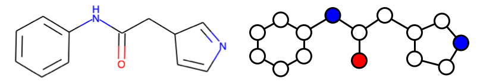
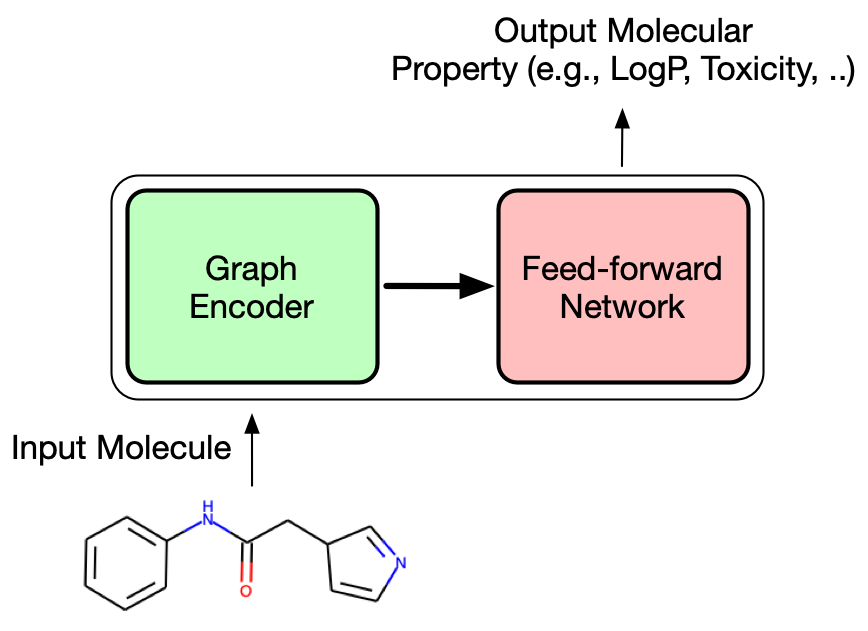
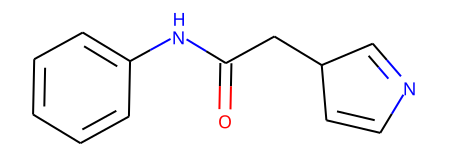
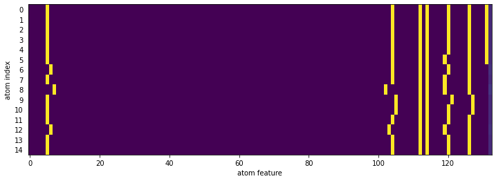
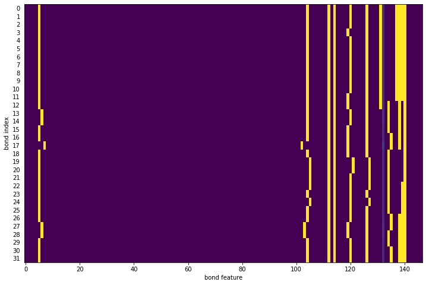
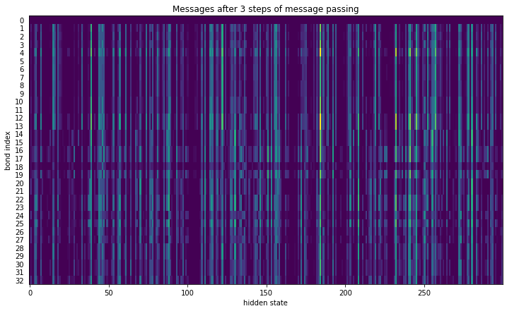
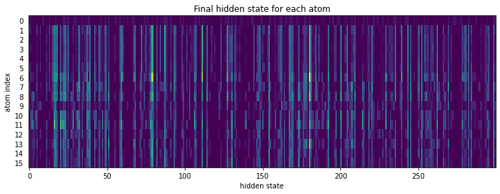

Learning Molecular Representation using Graph Neural Network - Molecular Graph
rdkit
machine learning
graph neural network
Taking a look at how graph neural network operate for molecular representations
Published
February 20, 2021
Motivation
I have used chemprop previously and got interested in how it works internally. I’ve read their papers several times, but I’m not a machine learning researcher, and how it handles the molecular reprentation using the graph neural network was not entirely clear to me. So, here I’ll spend some time going through their code and try to understand it my own way. Most of the code was initially taken from the chemprop repository and I striped away the parts that I don’t need for clarity.
Chemprop adopts a variant of graph neural network called “directed message passing neural network (D-MPNN)”. Let’s first talk about MPNN and discuss the difference between the MPNN and D-MPNN later.
MPNN is a model that operates on an undirected graph, G with a set of nodes v and edges e. This is appealing because molecules can be thought as a graph with nodes (atoms) and edges (bonds).

MPNN operates in two phases; molecular encoding phase and the feed-forward phase (the paper uses “message passing phase” and “readout phase”, respectively). In the molecular encoding phase, the features in the atoms and bonds are passed around T times to build a molecular representation of the molecule and the molecular properties are predicted in the feed-forward phase. The parameter T is also called “depth” and represents how “far” each nodes can “see”.

Compared to a typical MPNN, the package chemprop adopts directed MPNN (D-MPNN) architecture using bond features. Although the molecular graph does not have a direction, one can treat each bond as two directed edges that goes opposite direction. One of the advantage of this approach is to prevent totters (message that goes back to itself because the first node is the its neighbor of neighbor). chemprop also uses bond feature, which is concatenated feature vector of atom and bond feature vectors.
Let’s take a look at how chemprop featurizes atom and bond:
Atom Features
Code
# we will define a class which holds various parameter for D-MPNNclass TrainArgs: smiles_column =None no_cuda =False gpu =None num_workers =8 batch_size =50 atom_descriptors =None no_cache_mol =False dataset_type ='regression' task_names = [] seed =0 atom_messages =False hidden_size =300 bias =False depth =3 dropout =0.0 undirected =False aggregation ='mean' aggregation_norm =100@propertydef device(self) -> torch.device:"""The :code:`torch.device` on which to load and process data and models."""ifnotself.cuda:return torch.device('cpu')return torch.device('cuda', self.gpu)@device.setterdef device(self, device: torch.device) ->None:self.cuda = device.type=='cuda'self.gpu = device.index@propertydef cuda(self) ->bool:"""Whether to use CUDA (i.e., GPUs) or not."""returnnotself.no_cuda and torch.cuda.is_available()@cuda.setterdef cuda(self, cuda: bool) ->None:self.no_cuda =not cudaargs = TrainArgs()
For atom and bond features, we can take a look at the atom_features and bond_features function below. For example, the atom feature vector consists of one-hot encoding of atomic number, degree, formal charge, chirality, number of hydrogens, and hybridization. And the bond feature vector consists of one-hot encoding of bond type (single, double, triple, aromatic) and whether the bond is conjugated or not and whether in the ring or not.
# Atom feature sizesMAX_ATOMIC_NUM =100ATOM_FEATURES = {'atomic_num': list(range(MAX_ATOMIC_NUM)),'degree': [0, 1, 2, 3, 4, 5],'formal_charge': [-1, -2, 1, 2, 0],'chiral_tag': [0, 1, 2, 3],'num_Hs': [0, 1, 2, 3, 4],'hybridization': [ Chem.rdchem.HybridizationType.SP, Chem.rdchem.HybridizationType.SP2, Chem.rdchem.HybridizationType.SP3, Chem.rdchem.HybridizationType.SP3D, Chem.rdchem.HybridizationType.SP3D2 ],}# Distance feature sizesPATH_DISTANCE_BINS =list(range(10))THREE_D_DISTANCE_MAX =20THREE_D_DISTANCE_STEP =1THREE_D_DISTANCE_BINS =list(range(0, THREE_D_DISTANCE_MAX +1, THREE_D_DISTANCE_STEP))# len(choices) + 1 to include room for uncommon values; + 2 at end for IsAromatic and massATOM_FDIM =sum(len(choices) +1for choices in ATOM_FEATURES.values()) +2EXTRA_ATOM_FDIM =0BOND_FDIM =14def get_atom_fdim():"""Gets the dimensionality of the atom feature vector."""return ATOM_FDIM + EXTRA_ATOM_FDIMdef get_bond_fdim(atom_messages=False):"""Gets the dimensionality of the bond feature vector. """return BOND_FDIM + (not atom_messages) * get_atom_fdim()def onek_encoding_unk(value: int, choices: List[int]): encoding = [0] * (len(choices) +1) index = choices.index(value) if value in choices else-1 encoding[index] =1return encodingdef atom_features(atom: Chem.rdchem.Atom, functional_groups: List[int] =None):"""Builds a feature vector for an atom. """ features = onek_encoding_unk(atom.GetAtomicNum() -1, ATOM_FEATURES['atomic_num']) +\ onek_encoding_unk(atom.GetTotalDegree(), ATOM_FEATURES['degree']) +\ onek_encoding_unk(atom.GetFormalCharge(), ATOM_FEATURES['formal_charge']) +\ onek_encoding_unk(int(atom.GetChiralTag()), ATOM_FEATURES['chiral_tag']) +\ onek_encoding_unk(int(atom.GetTotalNumHs()), ATOM_FEATURES['num_Hs']) +\ onek_encoding_unk(int(atom.GetHybridization()), ATOM_FEATURES['hybridization']) +\ [1if atom.GetIsAromatic() else0] +\ [atom.GetMass() *0.01] # scaled to about the same range as other featuresif functional_groups isnotNone: features += functional_groupsreturn featuresdef bond_features(bond: Chem.rdchem.Bond):"""Builds a feature vector for a bond. """if bond isNone: fbond = [1] + [0] * (BOND_FDIM -1)else: bt = bond.GetBondType() fbond = [0, # bond is not None bt == Chem.rdchem.BondType.SINGLE, bt == Chem.rdchem.BondType.DOUBLE, bt == Chem.rdchem.BondType.TRIPLE, bt == Chem.rdchem.BondType.AROMATIC, (bond.GetIsConjugated() if bt isnotNoneelse0), (bond.IsInRing() if bt isnotNoneelse0) ] fbond += onek_encoding_unk(int(bond.GetStereo()), list(range(6)))return fbond
Let’s take a look at the example molecule and how atom and bond features actually look like:
# example moleculesmiles ='c1ccccc1NC(=O)CC1cncc1'mol = Chem.MolFromSmiles(smiles)mol

Below is the feature vector of the every atoms in the molecule. The first 100 elements represents the atomic number, followed by one hot encodings of degree (2), formal charge (0), chiral (false), total number of Hs (1), hybridization (SP2), aromaticity (1). Finally atomic mass (multiplied by 0.01) at the last entry.
The atom index 0 and 7 are very similar since they are both carbon atoms and only slightly different in terms of aromaticity and the number of hydrogens attached. Let’s take a look at the features of atom 0 and 7 side by side so we can see the difference more clearly.
# interactive plot does not work in the final page#import svgutils.compose as scimport svgutils.transform as sgfrom ipywidgets import interact, interactive, fixedfrom IPython.display import SVGfrom io import BytesIOdef drawit(m, atomId=0): atom = m.GetAtomWithIdx(atomId) feat = atom_features(atom)# draw molecule with highlight d = rdMolDraw2D.MolDraw2DSVG(200, 150) rdMolDraw2D.PrepareAndDrawMolecule(d, m, highlightAtoms=(atom.GetIdx(),)) d.FinishDrawing() mol_svg = d.GetDrawingText()# draw feature fig = plt.figure(figsize=(3, 0.8), dpi=150) ax = fig.add_subplot(111) im = ax.imshow([feat], interpolation='nearest', cmap='viridis', aspect='auto') plt.xlabel('atom feature') ax.set_yticks([]) img = BytesIO() plt.tight_layout() plt.savefig(img, transparent=True, format='svg') plt.close(fig) feat_svg = img.getvalue().decode()# arrange figures fig1 = sg.fromstring(mol_svg) fig2 = sg.fromstring(feat_svg) plot1 = fig1.getroot() plot2 = fig2.getroot() plot1.moveto(10, -40) plot2.moveto(0, 65) svg = sc.Figure("16cm", "6cm", plot1.scale(0.05), plot2.scale(0.05), ).tostr()return SVG(svg)interact(drawit, m=fixed(mol), atomId=(0, mol.GetNumAtoms()-1));
Bond Features
The bond feature is even more simpler. The bond feature vector consists of one-hot encoding of bond type (single, double, triple, aromatic) and whether the bond is conjugated or not and whether in the ring or not.
def bond_features(bond: Chem.rdchem.Bond):"""Builds a feature vector for a bond."""if bond isNone: fbond = [1] + [0] * (BOND_FDIM -1)else: bt = bond.GetBondType() fbond = [0, # bond is not None bt == Chem.rdchem.BondType.SINGLE, bt == Chem.rdchem.BondType.DOUBLE, bt == Chem.rdchem.BondType.TRIPLE, bt == Chem.rdchem.BondType.AROMATIC, (bond.GetIsConjugated() if bt isnotNoneelse0), (bond.IsInRing() if bt isnotNoneelse0) ] fbond += onek_encoding_unk(int(bond.GetStereo()), list(range(6)))return fbond
Code
# example moleculesmiles ='c1ccccc1NC(=O)CC1cncc1'mol = Chem.MolFromSmiles(smiles)# let's take a look at the first bondbond1 = mol.GetBondWithIdx(0) # C=C aromatic bondassert bond1.GetBeginAtom().GetSymbol() =='C'assert bond1.GetEndAtom().GetSymbol() =='C'feat1 = bond_features(bond1)assert feat1[4] ==1# aromaticassert feat1[6] ==1# ring# highlight which bond with Idx 0d = rdMolDraw2D.MolDraw2DSVG(300, 150)rdMolDraw2D.PrepareAndDrawMolecule(d, mol, highlightBonds=(0,))d.FinishDrawing()svg = d.GetDrawingText()SVG(svg)
Above is the feature vector of the 0th bond. This bond is aromatic, conjugated, and in a ring. Let’s take a look at another bond feature and see how it is different from the 0th bond feature vector.
Code
# highlight which bond with Idx 0d = rdMolDraw2D.MolDraw2DSVG(300, 150)rdMolDraw2D.PrepareAndDrawMolecule(d, mol, highlightBonds=(7,))d.FinishDrawing()svg = d.GetDrawingText()SVG(svg)
Now you can see this bond is double bond, conjugated, and not in a ring. Let’s display the bond feature vectors of every chemical bond in the molecule.
chemprop defines the molecular graph as the code shown below. The MolGraph itself is pretty straightforward; iterates over atoms and bonds and stores atom feature and bond feature vectors into f_atoms and f_bonds attributes and construct neighboring atom indices.
class MolGraph:def__init__(self, mol, atom_descriptors=None):# Convert SMILES to RDKit molecule if necessaryiftype(mol) ==str: mol = Chem.MolFromSmiles(mol)self.n_atoms =0# number of atomsself.n_bonds =0# number of bondsself.f_atoms = [] # mapping from atom index to atom featuresself.f_bonds = [] # mapping from bond index to concat(in_atom, bond) featuresself.a2b = [] # mapping from atom index to incoming bond indicesself.b2a = [] # mapping from bond index to the index of the atom the bond is coming fromself.b2revb = [] # mapping from bond index to the index of the reverse bond# Get atom featuresself.f_atoms = [atom_features(atom) for atom in mol.GetAtoms()]if atom_descriptors isnotNone:self.f_atoms = [f_atoms + descs.tolist() for f_atoms, descs inzip(self.f_atoms, atom_descriptors)]self.n_atoms =len(self.f_atoms)# Initialize atom to bond mapping for each atomfor _ inrange(self.n_atoms):self.a2b.append([])# Get bond featuresfor a1 inrange(self.n_atoms):for a2 inrange(a1 +1, self.n_atoms): bond = mol.GetBondBetweenAtoms(a1, a2)if bond isNone:continue f_bond = bond_features(bond)self.f_bonds.append(self.f_atoms[a1] + f_bond)self.f_bonds.append(self.f_atoms[a2] + f_bond)# Update index mappings b1 =self.n_bonds b2 = b1 +1self.a2b[a2].append(b1) # b1 = a1 --> a2self.b2a.append(a1)self.a2b[a1].append(b2) # b2 = a2 --> a1self.b2a.append(a2)self.b2revb.append(b2)self.b2revb.append(b1)self.n_bonds +=2
Let’s take a look at the atom and the bond features it builds internally. The atom features are exactly same as what we discussed in the previous section.
# atom featuresfig = plt.figure(figsize=(12, 4))ax = fig.add_subplot(111)im = ax.imshow(mol_graph.f_atoms, interpolation='None', cmap='viridis', aspect='auto')ax.set_yticks(list(range(mol_graph.n_atoms)))ax.set_yticklabels(list(range(mol_graph.n_atoms)))ax.tick_params(left=False) # remove the ticksplt.xlabel('atom feature')plt.ylabel('atom index')plt.show()

The “bond” in the molecular graph represents directed bonds. For example, there are two bonds, b1 and b2 between the atoms a1 and a2. The bond b1 is a bond from the atom a1 to atom a2 and the bond b2 is a bond from the atom a2 to a1. The bond feature is then constructed by concatenate the incoming atom (originating atom) feature and the bond feature.
Code
# bond features : atom feature + bond feature# bond features are added as nested atoms loop. # For each bond, a1->a2 and a2->a1 are added. So, more bond features than NumBondsfig = plt.figure(figsize=(12, 8))ax = fig.add_subplot(111)im = ax.imshow(mol_graph.f_bonds, interpolation='None', cmap='viridis', aspect='auto')ax.set_yticks(list(range(mol_graph.n_bonds)))ax.set_yticklabels(list(range(mol_graph.n_bonds)))ax.tick_params(left=False) # remove the ticksplt.xlabel('bond feature')plt.ylabel('bond index')plt.show()

The attributes a2b, b2a, and b2revb contains various mapping of atom index to bond indices, bond index to atom index, and reverse bond index. These are required for the message passing to work properly.
Message passing
Now we are ready to dig into the most interesting part of MPNN architecture. The messages are passed around according to the connectivity, and the message evolves as it travels around the nodes.
The message passing phase consists of T steps of update cycles. In each step t, hidden state hidden state h_{vw}^t and message m_{vw}^t are updated using message function M_t and vertex update function U_t. Each message and hidden states are associated with nodes v and w. Note the direction of message matters, so h_{vw}^t and m_{vw}^t are different from h_{wv}^t and m_{wv}^t.
The initial hidden state for each node is defined as
h_{vw}^0 = \tau (W_i \mathrm{cat} (x_v, e_{vw}))
where W_i is a learned matrix (\mathbb{R}^{h \times h_i}), \mathrm{cat} (x_v, e_{vw}) is the concatenation of atom features (\mathbb{R}^{h_i}), x_v and the bond feature e_{vw} for bond vw, and the \tau is the activation function.
chemprop uses very simple message passing function and edge update function:
The W_m is a learned matrix (\mathbb{R}^{h \times h})
Finally, the atom representation of molecule is computed by summing over all incoming bond features.
m_v = \sum_{k \in N(v)} h_{kv}^t
h_v = \tau(W_a \mathrm{cat} (x_v, m_v))
where W_a is a learned matrix (\mathbb{R}^{h \times h}). The readout phase of the D-MPNN uses the readout function, R, which is a simple summation of all the atom hidden states, which subsequently used in a feed-forward network for predicting the molecular properties.
h = \sum_{v\in G} h_v
Let’s get into to the code and see how above is implemented.
Initial message
The initial hidden state for each node is defined as
h_{vw}^0 = \tau (W_i \mathrm{cat} (x_v, e_{vw}))
Code
# prepare the tensors for message passingbond_fdim = get_bond_fdim()atom_fdim = get_atom_fdim()n_atoms =1# number of atoms (start at 1 b/c need index 0 as padding)n_bonds =1# number of bonds (start at 1 b/c need index 0 as padding)a_scope = [] # list of tuples indicating (start_atom_index, num_atoms) for each moleculeb_scope = [] # list of tuples indicating (start_bond_index, num_bonds) for each molecule# All start with zero padding so that indexing with zero padding returns zerosf_atoms = [[0] * atom_fdim] # atom featuresf_bonds = [[0] * bond_fdim] # combined atom/bond featuresa2b = [[]] # mapping from atom index to incoming bond indicesb2a = [0] # mapping from bond index to the index of the atom the bond is coming fromb2revb = [0] # mapping from bond index to the index of the reverse bondf_atoms.extend(mol_graph.f_atoms)f_bonds.extend(mol_graph.f_bonds)for a inrange(mol_graph.n_atoms): a2b.append([b + n_bonds for b in mol_graph.a2b[a]])for b inrange(mol_graph.n_bonds): b2a.append(n_atoms + mol_graph.b2a[b]) b2revb.append(n_bonds + mol_graph.b2revb[b])a_scope.append((n_atoms, mol_graph.n_atoms))b_scope.append((n_bonds, mol_graph.n_bonds))n_atoms += mol_graph.n_atomsn_bonds += mol_graph.n_bondsmax_num_bonds =max(1, max(len(in_bonds) for in_bonds in a2b)) # max with 1 to fix a crash in rare case of all single-heavy-atom molsf_atoms = torch.FloatTensor(f_atoms)f_bonds = torch.FloatTensor(f_bonds)a2b = torch.LongTensor([a2b[a] + [0] * (max_num_bonds -len(a2b[a])) for a inrange(n_atoms)])b2a = torch.LongTensor(b2a)b2revb = torch.LongTensor(b2revb)
def index_select_ND(source: torch.Tensor, index: torch.Tensor) -> torch.Tensor: “““Selects the message features from source corresponding to the atom or bond indices in index.”“” index_size = index.size() # (num_atoms/num_bonds, max_num_bonds) suffix_dim = source.size()[1:] # (hidden_size,) final_size = index_size + suffix_dim # (num_atoms/num_bonds, max_num_bonds, hidden_size)
fig = plt.figure(figsize=(12, 7))ax = fig.add_subplot(111)im = ax.imshow(a_message[b2a].detach().numpy(), interpolation='None', cmap='viridis', aspect='auto')ax.set_yticks(list(range(mol_graph.n_bonds +1)))ax.set_yticklabels(list(range(mol_graph.n_bonds +1)))ax.tick_params(left=False) # remove the ticksplt.xlabel('hidden state')plt.ylabel('bond index')plt.title('Messages after 3 steps of message passing')plt.show()

Readout Phase
Finally, the atom representation of molecule is computed by summing over for all incoming bond features.
m_v = \sum_{k \in N(v)} h_{kv}^t
h_v = \tau(W_a \mathrm{cat} (x_v, m_v))
where W_a is a learned matrix (\mathbb{R}^{h \times h}). The readout phase of the D-MPNN uses the readout function, R, which is a simple summation of all the atom hidden states, which subsequently used in a feed-forward network for predicting the molecular properties.
h = \sum_{v\in G} h_v
nei_a_message = index_select_ND(message, a2b) # num_atoms x max_num_bonds x hiddena_message = nei_a_message.sum(dim=1) # num_atoms x hiddena_input = torch.cat([f_atoms, a_message], dim=1) # num_atoms x (atom_fdim + hidden)atom_hiddens = act_func(W_o(a_input)) # num_atoms x hidden
Code
fig = plt.figure(figsize=(12, 4))ax = fig.add_subplot(111)im = ax.imshow(atom_hiddens.detach().numpy(), interpolation='None', cmap='viridis', aspect='auto')ax.set_yticks(list(range(mol_graph.n_atoms +1)))ax.set_yticklabels(list(range(mol_graph.n_atoms +1)))ax.tick_params(left=False) # remove the ticksplt.xlabel('hidden state')plt.ylabel('atom index')plt.title('Final hidden state for each atom')plt.show()

Now we sum the hidden states to form the final molecular vector. This vector is called “learned molecular vector” and used in property prediction using feed-forward network. At this point, we have not trained the leanred matrices and the hidden states are close to random numbers. In the next post, I’ll try to explore how these hidden states and the leanred molecular vector evolves as we train the neural network.
This learned molecular vector is equivalent to molecular fingerprint, however, unlike molecular fingerprint, this representation can change for different dataset to better represents the nature of the data, which is the basis of how graph neural network can outperform the traditional machine learning approaches using fingerprint only.
Graph neural network fits well in representing molecule. It was interesting to take a look into how chemprop compute the learned molecular vector. This gave me a better understanding of MPNN and some aspects that I could experiment with.
Right before the readout phase, the atom-centered message or hidden state associated for the edge, could be used for atom centered properties, such as pKa or NMR chemical shift.
The atom and bond feature appears very simple. chemprop has an option that can use features from other toolkit and it does improves the performance of prediction.
The network only considered bonded interactions, however, atoms do interact even if they are not bonded. Such interaction is completely ignored in MPNN.
The rate of information transfer can be faster if we adopt a coarse network where the node are connected to not only neighbors but neighbor-of-neighbors or a network of functional groups.
Some kind of attention algorithm might also be useful to improve interpretability of the network.
In the next post, I’ll train a GCNN and examine how the learned mlecular vector evolves after a training.